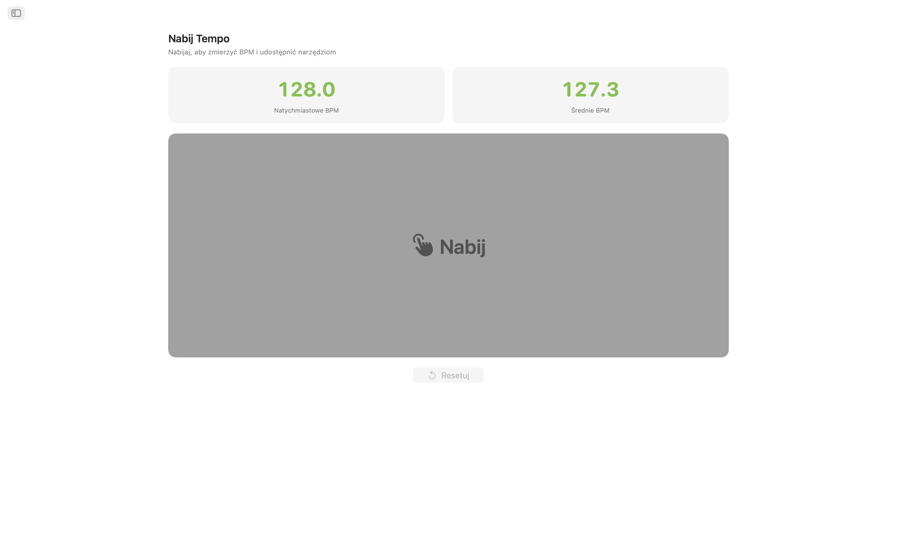
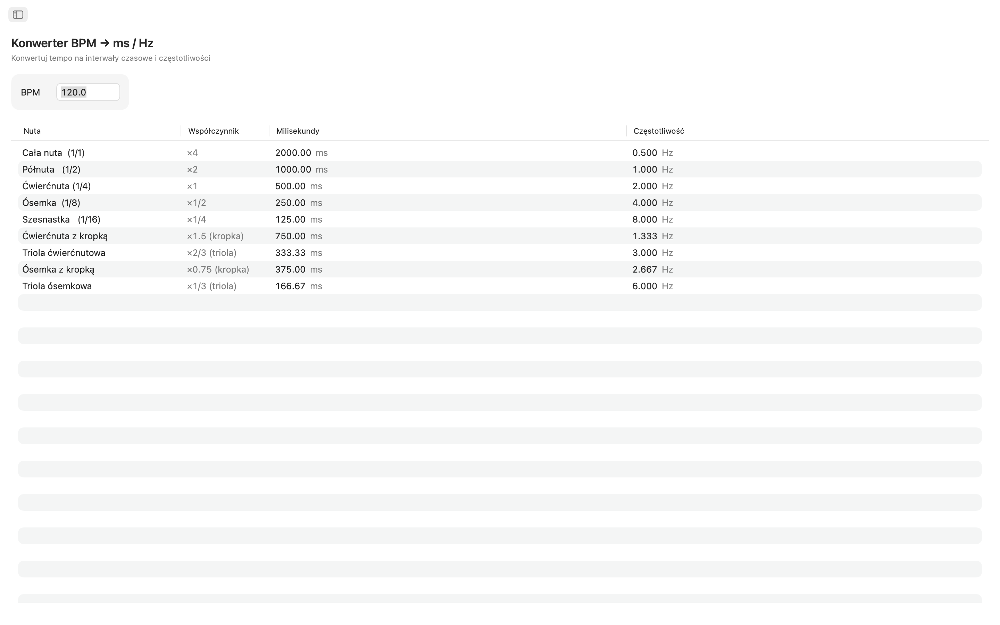
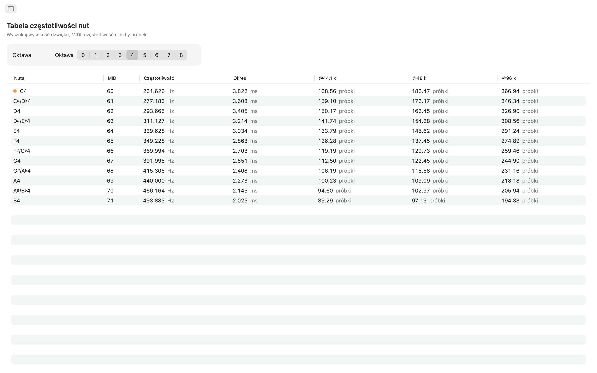
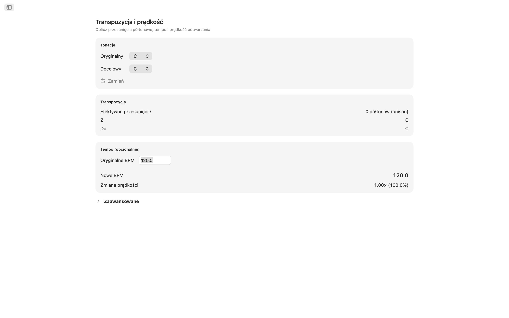
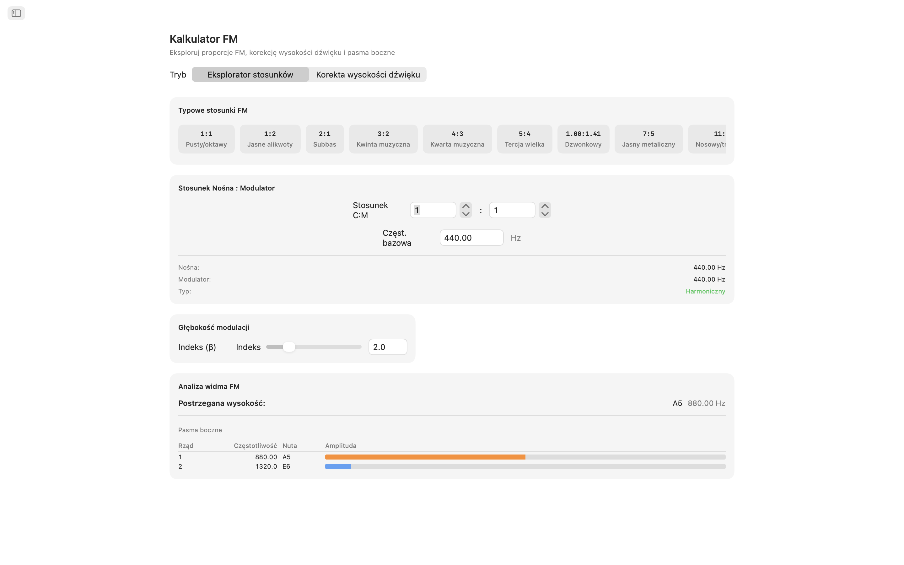
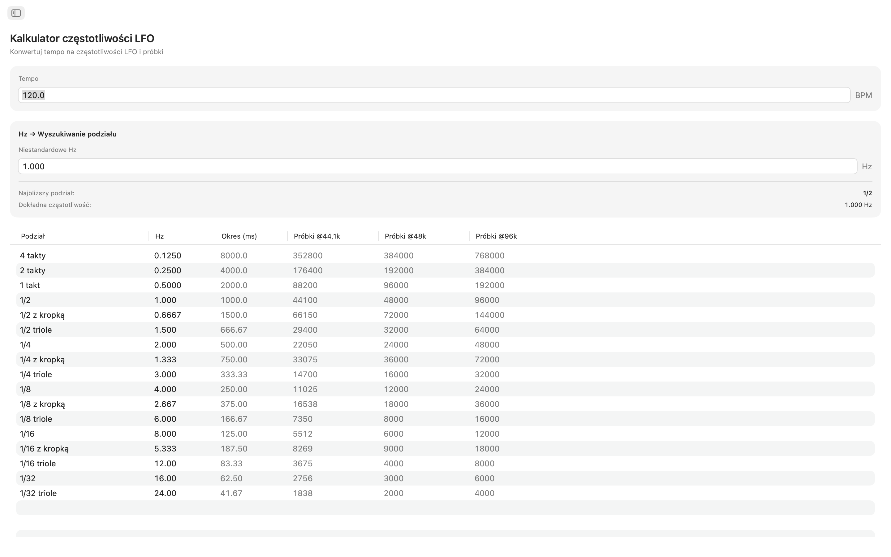
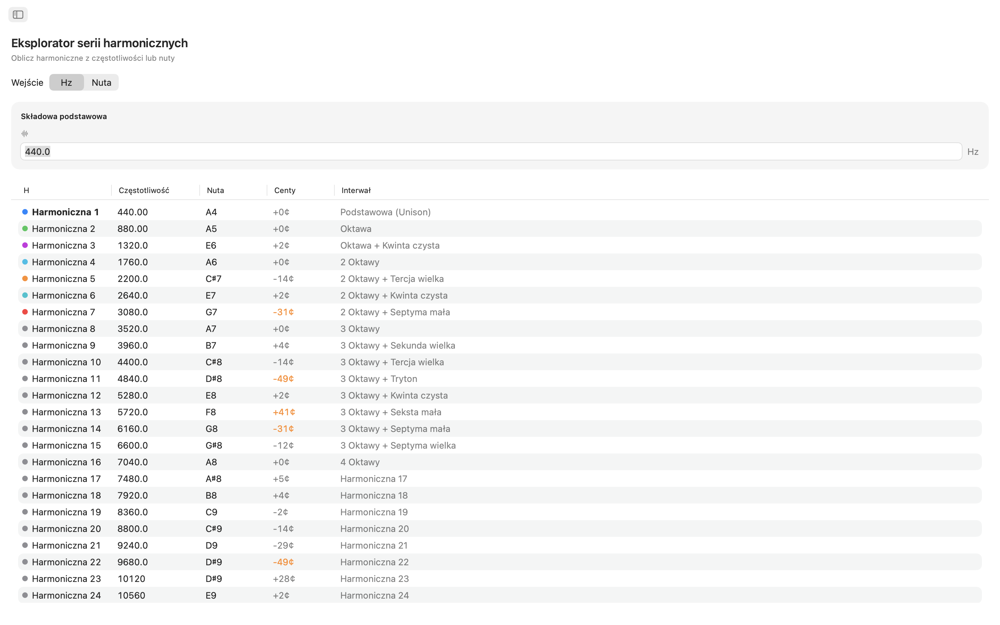
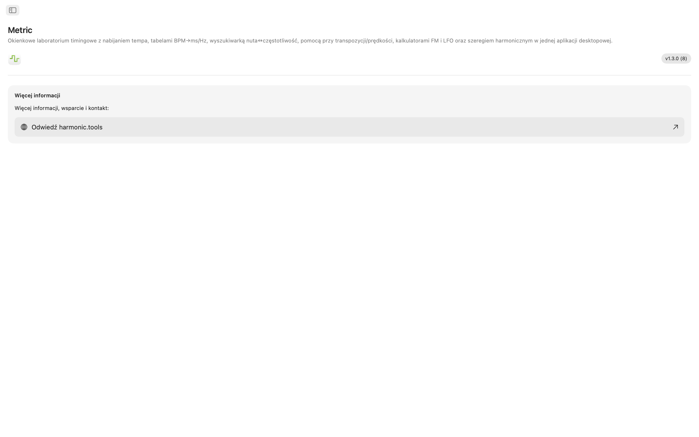

Metric na macOS
Zestaw narzędzi do taktowania i częstotliwości na macOS. Niezależnie od tego, czy ustawiasz czasy opóźnień w miksie, stroisz patch FM, synchronizujesz LFO czy transponujesz próbkę, Metric daje Ci natychmiastowe, precyzyjne odpowiedzi — wszystko w jednej czystej aplikacji z nawigacją boczną, obok Twojego DAW.
- Tap Tempo ze współdzielonym BPM we wszystkich narzędziach
- Konwerter BPM → ms / Hz (proste, punktowane, triolowe)
- Tabela nuta ↔ częstotliwość (108 nut, uwzględnia strój)
- Transpozycja i prędkość, kalkulator FM, częstotliwości LFO, 32 harmoniczne
Zrzuty ekranu
Zrzuty ekranu w trybie jasnym i ciemnym, dopasowane do motywu strony.










Funkcje
- Tap Tempo: Kliknij na dużą powierzchnię, aby zmierzyć tempo. Zobacz natychmiastowe BPM z ostatniego kliknięcia i średnią kroczącą z maksymalnie ośmiu kliknięć. Wyślij dowolny odczyt do konwertera BPM, transpozycji lub częstotliwości LFO jednym kliknięciem. Twoje tempo przepływa automatycznie przez każde narzędzie.
- Konwerter BPM → ms / Hz: Wprowadź tempo i odczytaj wartości proste, punktowane i triolowe dla nut całych, półnut, ćwierćnut, ósemek i szesnastek. Każdy wiersz pokazuje milisekundy i częstotliwość w Hz, więc możesz ustawić delay, pre-delay reverbu lub timing sidechain bez sięgania po kalkulator.
- Tabela częstotliwości nut: Przeglądaj wszystkie 108 chromatycznych nut od C0 do B8. Każda nuta pokazuje numer MIDI, częstotliwość w Hz, okres w milisekundach i liczbę próbek przy 44,1 kHz i 48 kHz. Środkowe C jest oznaczone. Konfigurowalny strój A4 (domyślnie 440 Hz) przelicza natychmiast każdą wartość.
- Transpozycja i prędkość: Wybierz oryginalną tonację i docelową, aby zobaczyć przesunięcie o półtony, nazwę interwału i dokładną wartość transpozycji DAW. Dodaj oryginalne BPM, a Metric obliczy nowe tempo i współczynnik prędkości. Dostrajaj suwakiem centów (±100) i suwakiem prędkości (±24 półtony).
- Kalkulator FM: Eksplorer proporcji pozwala ustawić proporcje nośnej i modulatora z częstotliwością bazową i wybrać spośród dziesięciu klasycznych presetów FM. Tryb korekcji wysokości działa odwrotnie: wybierz docelową nutę i uzyskaj dokładne częstotliwości. Oba tryby pokazują tabelę pasm bocznych z maksymalnie dziesięcioma składowymi.
- Kalkulator częstotliwości LFO: Przelicz dowolne BPM na częstotliwości LFO w 17 podziałach muzycznych. Każdy wiersz wyświetla Hz, okres w milisekundach i próbki na cykl. Odwrotne wyszukiwanie pozwala wprowadzić dowolną wartość Hz i znaleźć najbliższy pasujący podział muzyczny z wyraźnie pokazanym błędem.
- Eksplorator serii harmonicznych: Zacznij od częstotliwości lub nuty i zobacz pierwsze 32 harmoniczne z częstotliwością, najbliższą nutą, odchyleniem w centach i etykietą interwału. Harmoniczne niskiego rzędu są kolorowane. Odchylenia powyżej 30 centów wyróżnione, aby od razu zauważyć treść anharmoniczną.
Narzędzia, które ze sobą rozmawiają
Kliknij tempo raz i pojawi się wszędzie: konwerter BPM, transpozycja i częstotliwości LFO współdzielą to samo bieżące BPM. Zmień strój referencyjny A4 i zaktualizuje się on jednocześnie w częstotliwościach nut, kalkulatorze FM i harmonicznych.
Stworzone na Twój pulpit
- Działa w pełni offline — bez konta, reklam, śledzenia
- Natywna aplikacja macOS z nawigacją boczną
- Interfejs uwzględniający tryb ciemny, dopasowany do wyglądu systemu
- Dwie standardowe częstotliwości próbkowania: 44,1 kHz i 48 kHz
- Konfigurowalny strój referencyjny A4
- Skalowalny rozmiar okna — trzymaj je obok DAW
Niezależnie od tego, czy jesteś producentem programującym opóźnienia, projektantem dźwięku rzeźbiącym barwy FM, klawiszowcem strojącym oscylatory, czy inżynierem dźwięku sprawdzającym częstotliwości, Metric daje każdą odpowiedź dotyczącą taktowania i częstotliwości na Twoim pulpicie.